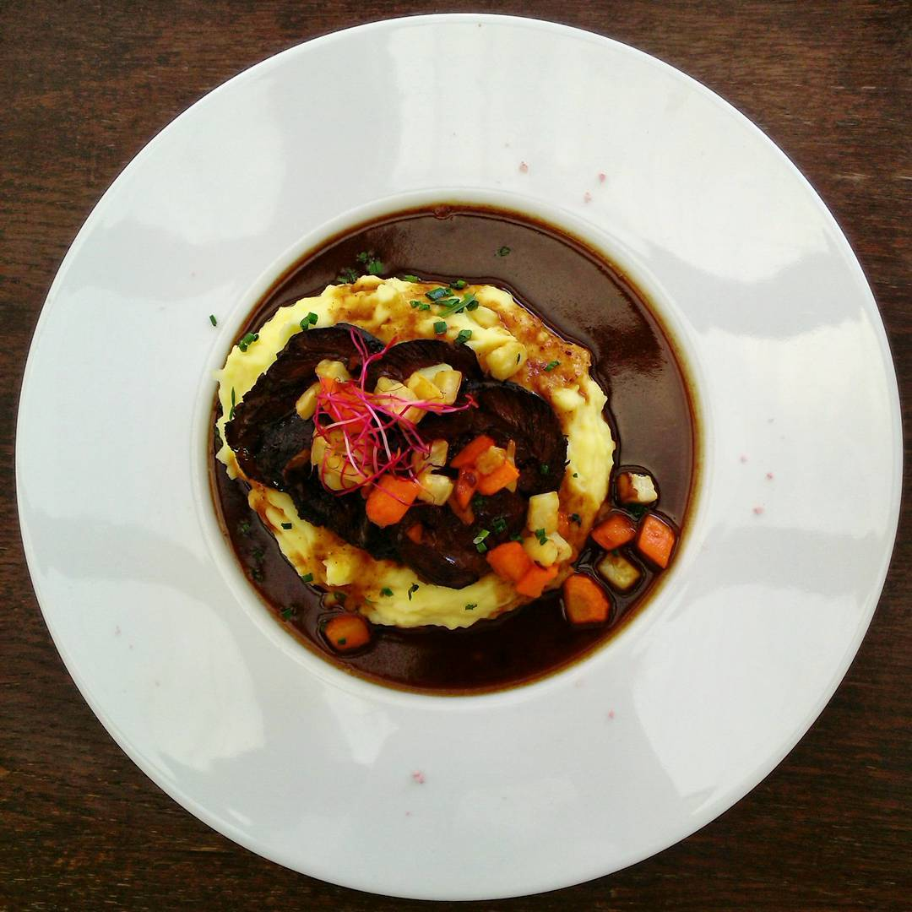

Hovädzie na víne podľa @betybakes — Normy Jedál
Back from the seaside ... czech nature is also beautiful. After the walk, well deserved treat in #farmaptyrov / Zasluzena odmena po prechadzke v ceskom raji - moje oblubene hovadzie licka na vine s kasou ...vyyybornee, mnaaaam! #beef #hovadzienavine #hovezinavine #potatomash #food #instafood #foodstagram #foodblogger #foodblog #dinner #lunch #favoritedish #favoritemeal